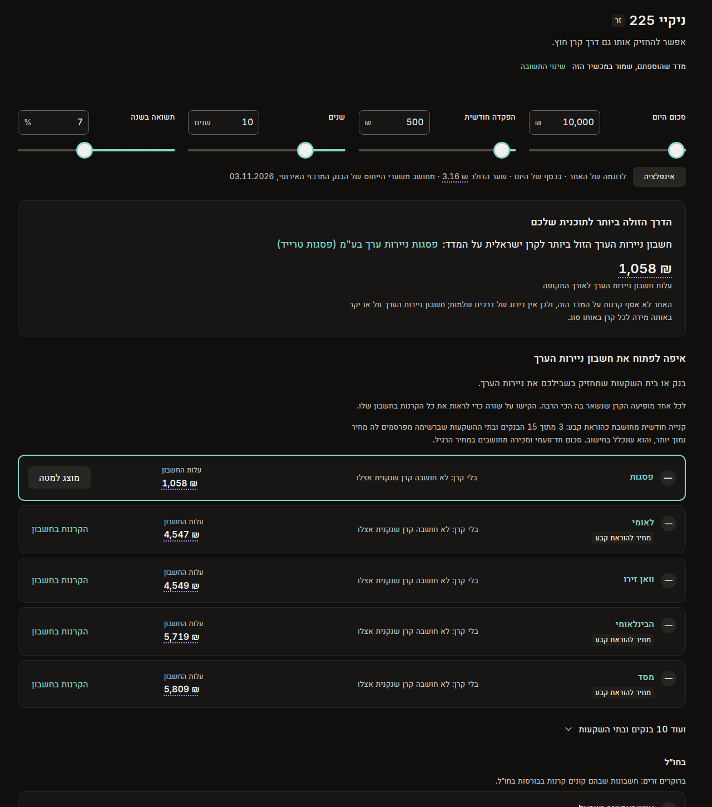
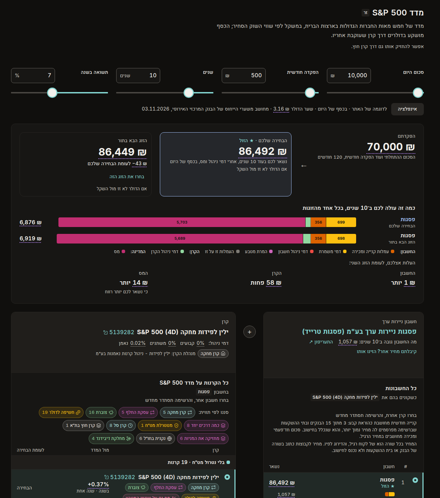

מדד שהוספתם בכפתור ״אחר״ (כאן ניקיי 225, מדד זר) נפתח בלי קרנות, כי האתר לא אסף קרנות עליו. בלי קרן העמוד נופל למבנה הישן: כרטיס כותרת, רשימת בתים בכרטיסים, ובחירת קרן מתוך תיבה. ברגע שמוסיפים קרן, העמוד כבר עובר למבנה הרגיל. השרטוטים מראים את המדד בלי קרן במבנה הרגיל. כל המספרים מהעמוד עכשיו, לתוכנית לדוגמה של האתר (10,000 ₪ היום, 500 ₪ בחודש, 10 שנים, 7%).
מסגרת מקווקווה: חלוקת העלות לסוגי העמלות בפסים היא לדוגמה; הסכום של כל פס הוא המספר האמיתי.


אותה תוצאה למעלה ואותן שתי עמודות. בלי קרן אין ״כמה נשאר״, אז התוצאה והרשימה מדרגות לפי מה שהחשבון עצמו גובה, והעמודה של הקרן אומרת שאין עדיין קרן ומזמינה להוסיף אחת. אחרי שמוסיפים קרן, אותו מסך מתמלא ב״כמה נשאר״, בלי שום דבר שזז ממקומו.
כמה נשאר בסוף תלוי גם בדמי הניהול של הקרן, והאתר לא אסף קרנות על ניקיי 225. הוסיפו את הקרן שאתם שוקלים, והעמוד יחשב כמה נשאר בכל חשבון.
אותן שתי עמודות בדיוק כמו בא׳. במקום כרטיס התוצאה עומדת הזמנה אחת להוסיף קרן. פשוט יותר, אבל עד שמוסיפים קרן אין בראש העמוד תשובה, וכשמוסיפים קרן כרטיס התוצאה נכנס ודוחף את העמודות למטה.
האתר לא אסף קרנות על ניקיי 225. הוסיפו את הקרן שאתם שוקלים, והעמוד יחשב כמה נשאר בכל חשבון. עד אז, הרשימה מדרגת את החשבונות לפי מה שהם גובים.
+ הוספת קרן שלא ברשימהלהציג ״כמה נשאר״ עם קרן מומצאת בלי דמי ניהול: המספר היה נראה כמו תשובה, אבל הוא על קרן שלא קיימת.